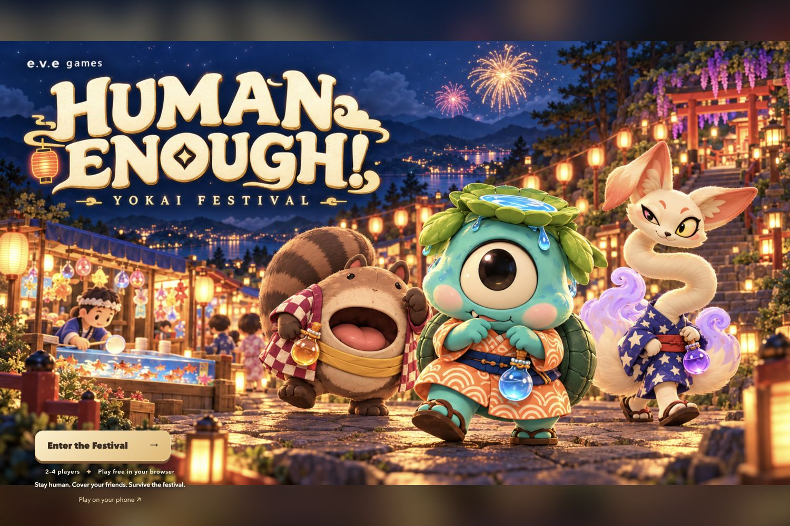
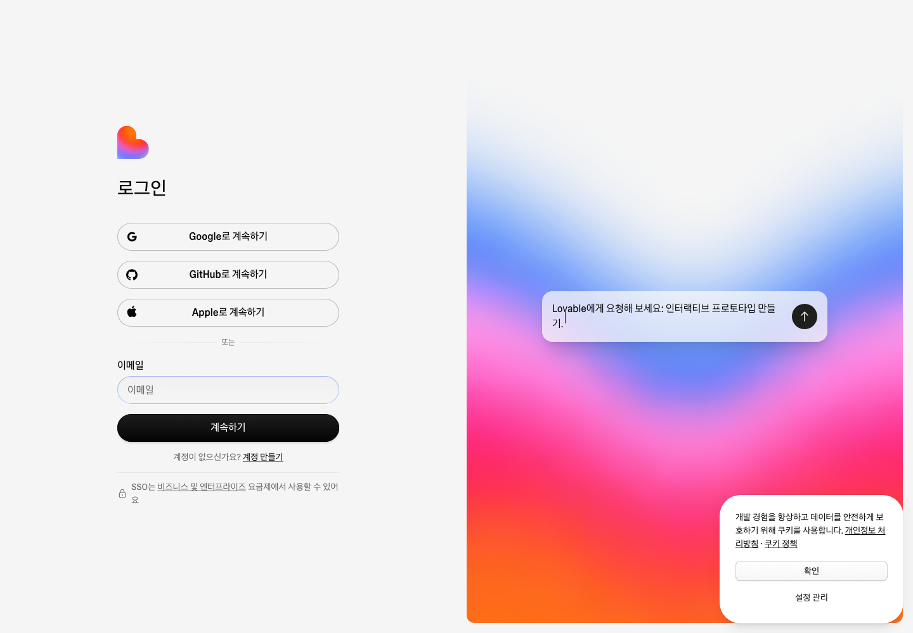
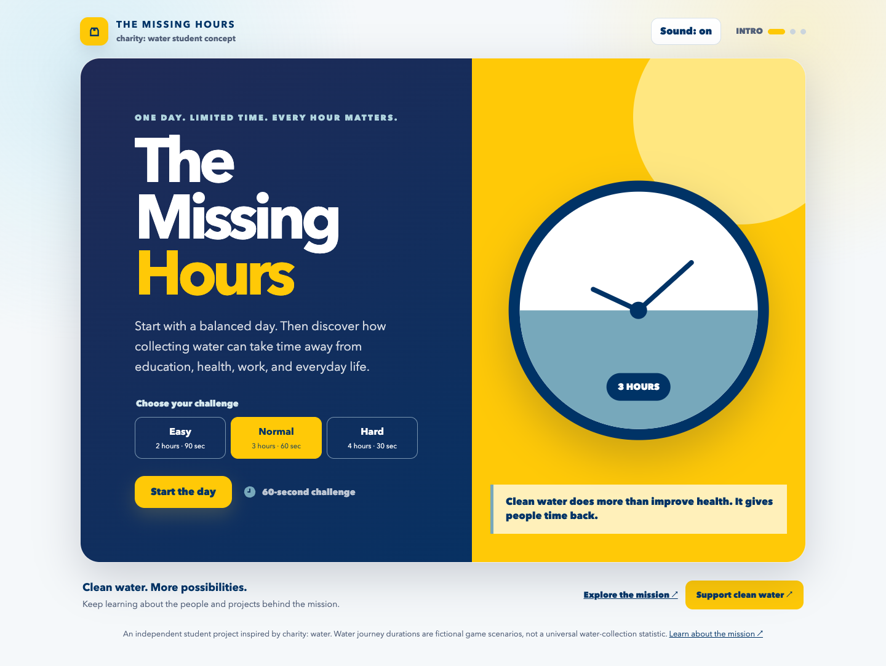

01COOPERATIVE BROWSER GAME
Human Enough!
Yokai, disguises, and a festival that rewards looking after your crew.
Playable competition submission
CREATIVE TECHNOLOGY · FILMMAKING · AI PRODUCT
A filmmaker learning to turn creative problems into useful products and playable worlds. Studying Film & Media Arts and Artificial Intelligence at the University of Utah.
Explore selected workTOP PROJECT Handshake × OpenAI Codex Creator Challenge · SceneForge
SOCIAL BUZZ AWARD Kling AI NEXTGEN × MBC C&I
01 / SELECTED PROJECTS
Each project connects the idea, my contribution, the implementation, and what still needs work.

01COOPERATIVE BROWSER GAME
Yokai, disguises, and a festival that rewards looking after your crew.
Playable competition submission
 02
02FILMMAKING PLANNING TOOL
Turn a rough film idea into a plan you can inspect, revise, and learn from.
Working web prototype · live AI depends on server configuration

03CREATIVE AI PRE-PRODUCTION
Translate a filmmaker’s intention into structured shots and model-aware prompts.
Web prototype · account or service access may be required
 04
04Connect mathematics content, practice, and a more engaging learning experience.
Early-stage venture · product and content development
02 / WEB & INTERACTION STUDIES
Educational projects that explore APIs, interaction rules, accessibility, and responsive interfaces.
 05
05WEB DEVELOPMENT · COURSE PROJECT
Explore an astronomy archive with clearer loading, discovery, and detail views.
Published educational project

06INTERACTIVE STORY · COURSE PROJECT
A small game about the choices a day loses when collecting water takes time.
Published educational prototype
03 / ABOUT
AI helps me build and explore. Deciding what matters to a creator or learner is still my responsibility.
I’m Junsu, also known as Michael. I create films and animation as E.V.E Studio and co-founded Matths, an AI education startup. Moving between production and product work has taught me to ask who the work is for, what it needs to do, and how to tell whether it helps.
I’m interested in internships across AI product, creator tools, interactive media, and content operations.
University of Utah
Film & Media Arts + Artificial Intelligence
Minors: Animation Studies and Games
Expected May 2028 · GPA 3.7/4.0
Co-founder & CPO · Matths
Community Ambassador, Korea · ImagineArt (volunteer; onboarding)
Elite Creator Program member · Kling AI
Filmmaker Design Partner · MachGen AI
Creative direction, product prototyping, AI-assisted JavaScript/HTML/CSS and Python, structured creative workflows, and iterative editing.
LET’S CONNECT